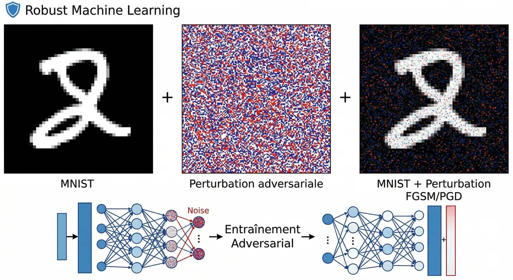
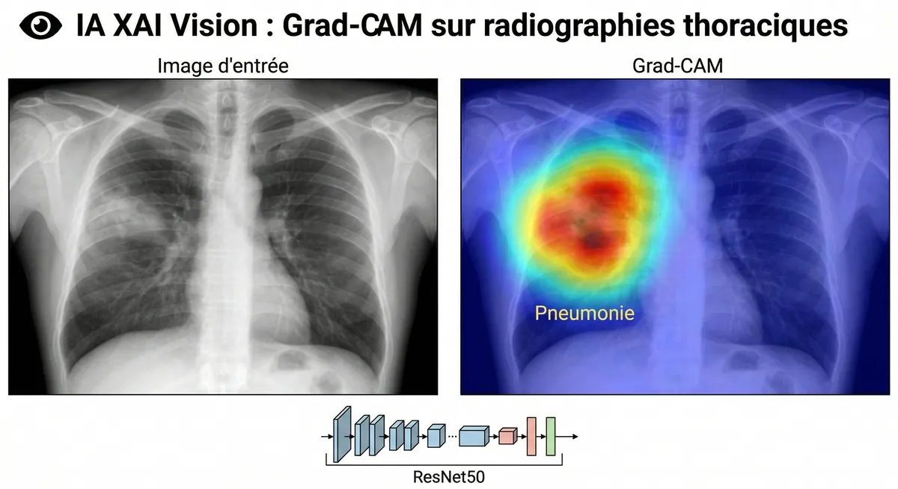
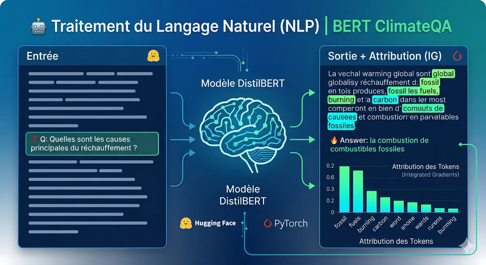
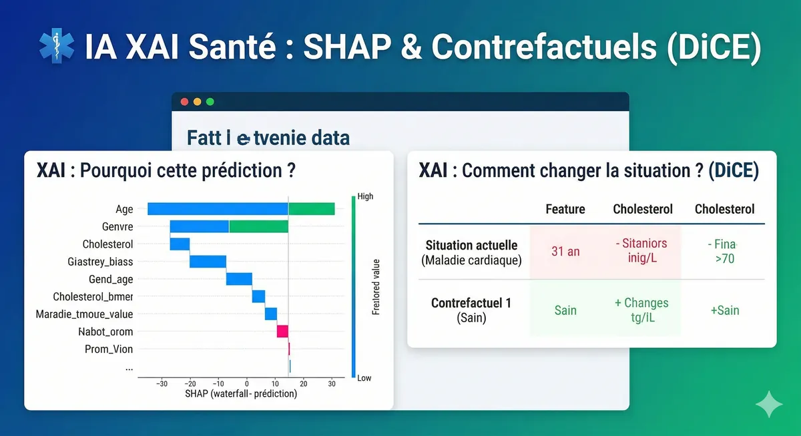
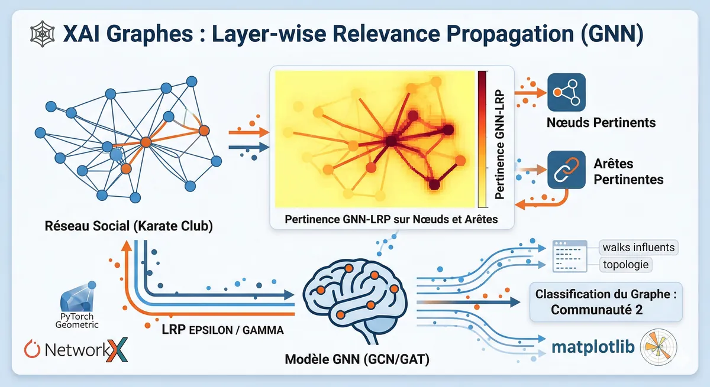
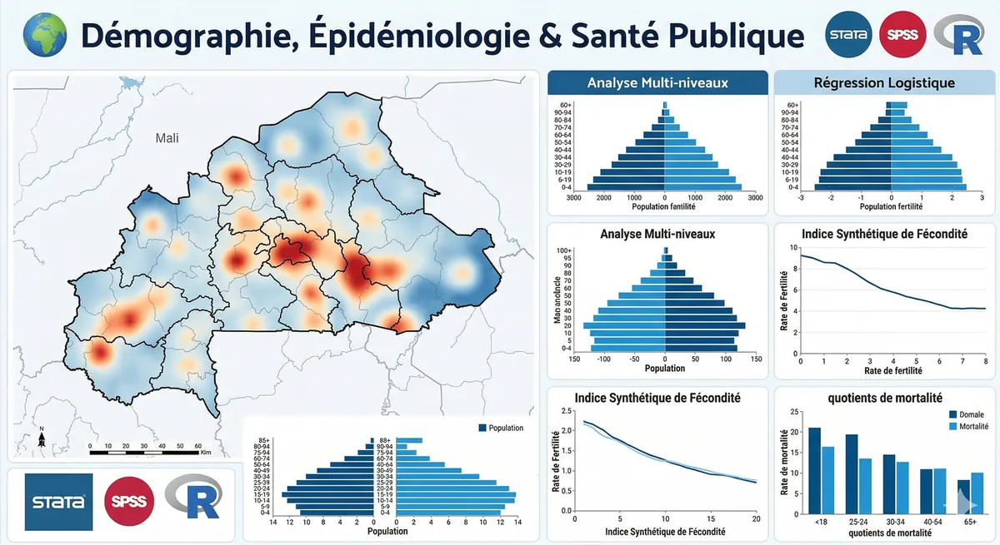
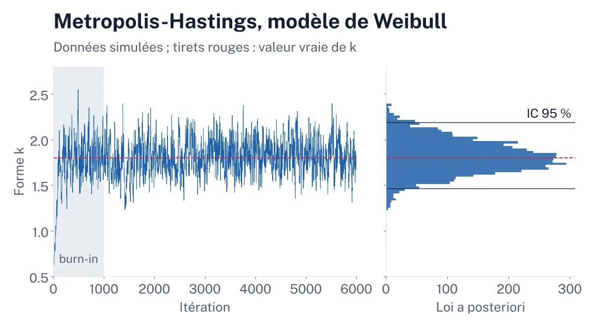
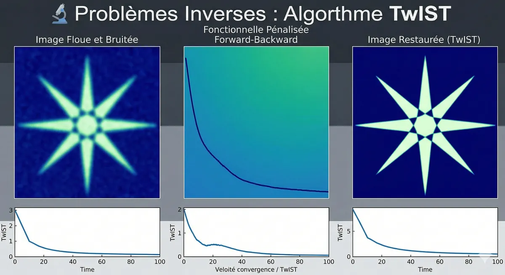
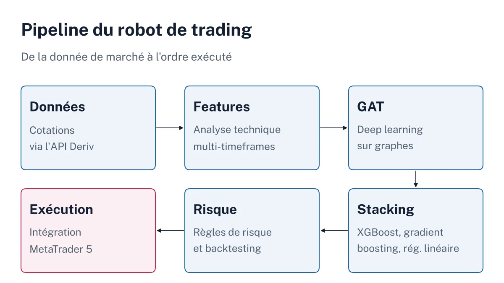

Robustesse et confidentialité
Apprentissage fédéré sécurisé
Diagnostic du cancer du sein par plusieurs hôpitaux simulés qui entraînent un modèle commun sans jamais échanger leurs données brutes.
92 % → 94 % d’accuracy en corrigeant le client drift avec SCAFFOLD
Differential privacy : protection des données médicales par bruit gaussienFairness : mesure et atténuation des biais algorithmiques

Robustesse et confidentialité
Machine learning robuste : Median of Means et entraînement adversarial
Estimateurs résistants aux valeurs aberrantes et défense d’un réseau de neurones contre les attaques adversariales sur MNIST.
+65 points de robustesse grâce à l’adversarial training PGD
Statistique robuste : estimateur Median of Means (MoM) face aux outliersAttaques : FGSM et PGD-40 implémentées pour éprouver le modèle

IA explicable
Grad-CAM sur ResNet50
Rendre visibles les zones d’une image qui ont pesé dans la décision d’un réseau convolutif profond.
Algorithme : cartes de chaleur calculées à partir du gradient des activationsDiagnostic : localisation des zones de l’image qui ont le plus influencé le modèleAnalyse multi-couches : granularité sémantique comparée d’une couche à l’autre

IA explicable
Integrated Gradients sur DistilBERT
Expliquer, token par token, les réponses d’un modèle Transformer de question-réponse sur le climat.
Complétude vérifiée : écart inférieur à 0,05
Attribution : pertinence de chaque token par approximation de l’intégrale du gradientLecture du modèle : influence des mots de la question sur la localisation de la réponse

IA explicable
SHAP et contrefactuels DiCE
Expliquer des modèles tabulaires, survie sur le Titanic et risque de maladie cardiaque, puis proposer des leviers d’action concrets.
SHAP : contribution de chaque variable à une prédiction (sexe, classe, âge, variables cliniques)DiCE : contrefactuels actionnables, ce qu’il faudrait changer pour modifier le diagnosticDeux questions distinctes : pourquoi cette prédiction, et comment changer la situation

IA explicable
Layer-wise Relevance Propagation sur graphes
Adapter la propagation de pertinence (LRP) aux Graph Neural Networks, testée sur le réseau social Karate Club.
Décomposition par walks : chemins de messages les plus influents dans le grapheGNN-LRP : explication par la topologie, au-delà des seules variablesRéseaux denses : LRP-ε et LRP-γ pour le diagnostic du cancer du sein

Statistique et démographie
Démographie, épidémiologie et santé publique
Exploitation des Enquêtes démographiques et de santé (EDS) du Burkina Faso et du Mali pour analyser les comportements de santé et la mortalité.
Modélisation : analyse multiniveau et régression logistique multinomialeDémographie : indice synthétique de fécondité, quotients de mortalité (tables types de Coale-Demeny)Méthode : plans de sondage complexes (pondérations, effets de grappe), suivi-évaluation

Statistique et démographie
Statistique bayésienne et inférence MCMC
Quantifier l’incertitude sur la durée de vie d’un système avec un modèle de Weibull.
Algorithme : Metropolis-Hastings implémenté from scratchModèle : loi de Weibull et prédiction avec PyMC3Validation : intervalles de crédibilité à 95 % et convergence des chaînes de Markov

Optimisation et finance
Problèmes inverses : restauration d’images avec TwIST
Déconvolution d’images floues et bruitées, un problème mal posé, par optimisation itérative.
Modèle : minimisation de fonctionnelles pénalisées (forward-backward)TwIST : Two-step Iterative Shrinkage/Thresholding pour accélérer nettement la convergenceDeepInverse : restauration d’images soumises à un bruit gaussien

Optimisation et finance
Trading algorithmique multi-modal
Robot de trading qui combine analyse technique multi-timeframes, deep learning sur graphes et gestion du risque.
Deep learning : Graph Attention Networks (GAT) pour l’analyse de marchéMéta-modèle : stacking de XGBoost, gradient boosting et régression linéaireFiabilité : backtesting financier et intégration des API Deriv et MT5